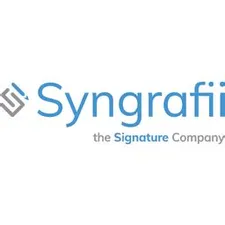

Who is Syngraffi
Syngrafii has taken the security of its ideas, systems, methods, and computer programs very seriously from its inception. Unlike many other organizations, Syngrafii files and safeguards all it provides to its growing clientele. Patents safeguard not only their company, but also the users of our service, as they can rely on exclusive rights to the technology and platforms they provide in the market.
Secure
The iinked platform's proprietary signing technology,
including the industry-leading MasterFileTM audit trail, delivers an unrivaled level of security and nonrepudiation,
making digital signatures even safer than pen and paper signatures.
Authentic
Every iinked platform signature is biometrically exact and unique.
There is no need to cut and paste signatures,
no need for expensive equipment, and no need to juggle different programs.
Flexible
From enterprise-level integrations to small business and consumer signing solutions, the iinked platform is scalable, value-driven and business-friendly. With multiple signing options,
it’s easy to customize a solution for your unique workflow requirements.
Syngrafii is actively collaborating with external partners to lease and/or purchase additional technology in order to maintain its position as the top video signing company and provider of next generation e-Signature solutions.